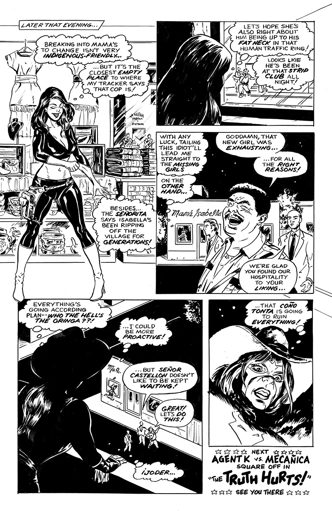

El Rey Day (Part 1)
(R; Action Drama) Karen's galactic search for her father uncovers local evil in an unearthly village much like Oaxaca.
El Rey Day (Part 1): Page 1 of 6
About This Page
Karen's crashed ship is the Alpha 7 , which she either won or stole from Barbarella .
Story title solidly based on the Doc Savage logo designed by Len Leone for the 1964 Bantam reprints. Leone also guided his production staff to draw the book titles. I adapted the logo by hand (original art is 10.75 inches wide). Perhaps I'll fixed the cramped spacing of "heroine" some day.
El Rey Day (Part 1): Page 2 of 6
About This Page
The Señorita is based on a woman I met in Oaxaca as traveling companion and bodyguard for socio-cultural anthropologist socio-cultural anthropologist Amy Todd, PhD (whose Rate My Professor ranking is through the roof). In only meeting her once, the elderly Señorita seemed sharp, funny, judgmental, and only a little sad about outliving almost everyone she knew. As I started fictionalizing, this physically decrepit woman became the smartest, most manipulative person in the story.
The central conflict is the real-life crisis of missing women in Mexico, a highly competent human trafficking industry that acts with absolute impunity. Earlier drafts based more solidly on reality had no way for Karen and Mecañica to win. Script revisions use localized crime elements as a Trojan Horse for more adventure science fiction/action elements.
El Rey Day (Part 1): Page 3 of 6
About This Page
Months of laying low made Karen a pent-up action heroine at this point. Even the hint of conflict that doesn't involve her wakes up something in her soul. Wish I drew the Señorita's reaction to look more surprised.
Karen's broken Spanish is a running gag in "El Rey Day."* Spanish dialog is lettered in English (like Love and Rockets). Her dialog is first written in normal English, then turned into Spanglish with a two-way Google Translation.
- English: Your torture is easier to endure than your bullshit.
- Google translation of English: Tu tortura es más fácil de soportar que tu mierda.
- English from Google translation: Your torture is easier to bear than your shit.
* Google Translate has gotten a lot better since I started writing this. Might have to work harder to generate Karen's horrible Spanish.
El Rey Day (Part 1): Page 4 of 6
About This Page
Sexism and police corruption play a big part in real-life missing women cases. Cops assuming the girls simply run off with their boyfriends don't open cases within 72 hours, defying national protocol ordering searches to begin immediately.
The female cops are based on women hired by Mexico police chief Rolando Eugenio Hidalgo Eddy in 2010 as a tourist attraction. Their uniforms were accentuated with sunglasses, skin tight leggings, and 5-inch heel boots. Two officers complained of attractiveness inspections, "I trained to be a police officer, not a showgirl." The force was disbanded in 2016.
El Rey Day (Part 1): Page 5 of 6
About This Page
While probably too subtle, the last panel is my favorite bit of storytelling. Literally every character thinks they got what they want.
El Rey Day (Part 1): Page 6 of 6
About This Page
There's probably too much story for a wrapup page, but at least I eliminated an extra transition page showing Karen breaking into the clothing store to change into her Agent K outfit. I'm still happy with the slow burn intro of Mecañica and my fictional Castellon crime family.
Story Notes
A few months after the events of "The Null Device," Karen's still looking for her missing father. The three-chapter arc introduces new characters and reveals wider continuity. Each chapter is told from a different character's point of view: Karen, Mecañica (a locally focused, low-tech heroine), and the Castellon crime family.
- Tools and Materials
- 10.5 x 16 inch live area on Strathmore 500 bristol paper
- Blick Black Cat india ink
- Ruling pen (borders)
- Short-handle round #2 sable brush
- Speedball nib #512 (straight lines, details)
- Hunt 22B (medium lines)
- Hunt 102 crowquill nib (super-thin lines)
- Hunt 107 crowquill nib (dialog lettering)
- Speedball B6 (bold dialog lettering)
- Ames Lettering Guide (3.3 two-thirds calibration)
- Adobe Photoshop (production)
Dave M!